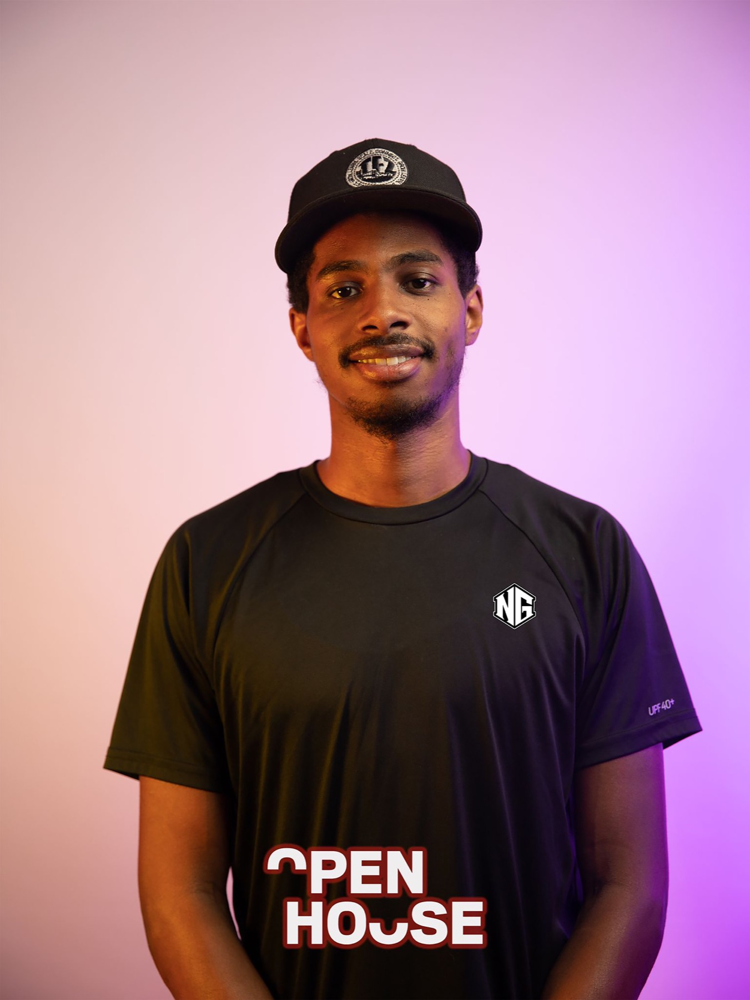

Build before you broadcast.
Start with the real problem. Make the system work. Let the result give the message its weight.
I build owned digital systems, visual brands, and practical AI education, then show the work so other builders can move with clarity.

The people shaping what comes next will not be the loudest people online. They will be the people who know how to make something real and can teach from the evidence.
Too many brilliant builders stay hidden while people with less experience dominate the conversation. I know that position because I spent years doing the work behind the scenes.
Now the mission is different: build useful things, document the process, share what holds up in practice, and help more people own the skills and infrastructure their future depends on.
Start with the real problem. Make the system work. Let the result give the message its weight.
Education becomes useful when it comes from tested decisions, honest tradeoffs, and a process people can follow.
Platforms can distribute your work. They should not own your audience, your customer path, or your future.
Visibility is not performance when it reveals how the work was done and gives someone else a way forward.
Practical AI education and applied intelligence for people ready to learn, build, and work differently.
Enter InnerG IntelOwned customer paths that turn scattered attention, requests, bookings, and payments into one clear business system.
Visit OwnYourWebVisual identities and conversion-ready creative that help serious businesses look credible before they say a word.
Visit ShopNasGraphicsPractical AI education and applied intelligence for people ready to learn, build, and work differently.
Enter InnerG Intel Build intelligence / Show the work
Build intelligence / Show the work
I am building the public record now: client systems, visual identities, AI learning tools, open agent skills, and field notes that show how each decision became something usable.
I started building in 2015 because I saw problems that needed solving. The early years were not about recognition. They were about learning how websites, visual identity, client experience, and digital systems actually work together.
ShopNasGraphics taught me how trust is designed. OwnYourWeb turned that craft into systems businesses can control. InnerG Intel made education part of the infrastructure.
This next chapter is about stepping forward without abandoning the builder’s discipline: sharing what I know, showing what I make, and helping experienced people stop hiding the value they have already earned.
Invite me to teach, speak, or help turn the experience inside your business into a system people can see, understand, and use.